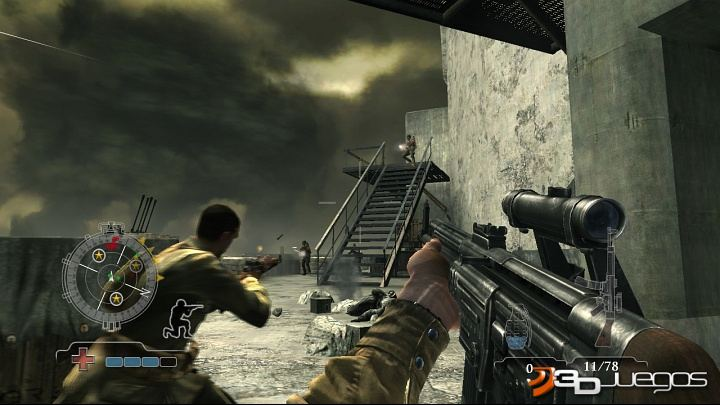
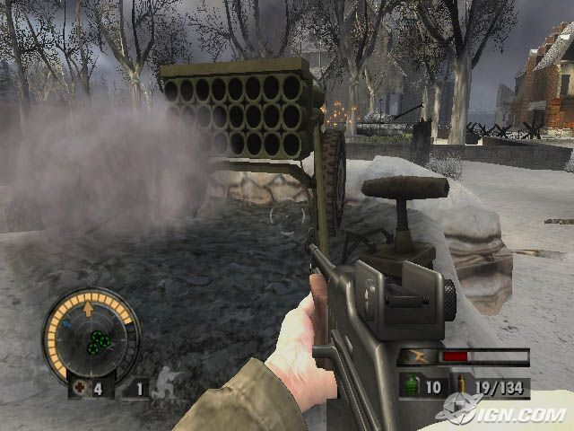

Medalha de Honra

Menu Principal
A revoluçao dos games de tiros chegou
Por: Maicon Brendo
Atualizado em 01/Dezembro/2015
O que é
Atualizado em 01/Dezembro/2015
O que é
Medal of Honor (MOH) é um nome de uma série de jogos eletrônicos idealizados pelo realizador Steven Spielberg, do estilo "first-person shooter (FPS)", cuja ação ocorre no período da Segunda Guerra Mundial. O primeiro jogo foi desenvolvido pela DreamWorks Interactive (actualmente designada "EA Los Angeles") e publicado pela Electronic Arts em 1999 para o console PlayStation. Desde então, Medal of Honor originou uma série de outros jogos semelhantes, disponíveis para outras plataformas como PC.
No jogo original, o jogador encarna o tenente Jimmy Patterson, um soldado ligado a OSS, uma organização militar secreta dos EUA, tomando outros jogos o lugar de outros soldados. O objetivo é completar uma série de missões, que incluem destruir estruturas e soldados dos exércitos das Potências do Eixo. Durante os jogos, são representados alguns momentos históricos daquela guerra, como o desembarque na Normandia ou a Batalha das Ardenas, inspirados no filme "Saving Private Ryan". Todo o armamento, replica com detalhe aquele usado na altura e a sonoplastia que acompanha o desenrolar dos jogos, tem sido recebido vários prêmios pela sua qualidade.
Na Alemanha, toda a série foi considerada controversa, devido ao símbolos nazistas, como emblemas, uniformes e bandeiras, que podem ser encontrados ao longo dos jogos. Naquele país, este tipo de simbologia só pode ser usado para referências históricas. Assim, foi considerado inadequado para os mais jovens e disponibilizado apenas para pessoas maiores de 18 anos, e toda a publicidade foi retirada.

Sobre o Game
Em Medal Of Honor Airborne, você passa para as botas de Boyd Travers, soldado de primeira classe da 82ª Divisão Aerotransportada. Envolver-se em batalhas em toda a Europa, a partir de começos rochosas na Sicília para triunfos para vencer a guerra na Alemanha. Cada missão começa atrás das linhas inimigas, com um lançamento aéreo intenso e totalmente interativo. Sua capacidade de determinar seu próprio ponto de partida muda drasticamente a maneira como cada missão joga fora. Ver toda a operação desde o ar, e então controlar o seu pára-quedas para escolher o seu local de pouso. No terreno, recolher os seus sentidos e avaliar o terreno.
Uma grande variedade de armas personalizáveis autênticos estão à sua disposição, cada um com características distintas. Escolha o seu caminho neste ambiente FPS livre roaming. Medal of Honor Airborne também contará com personagens foto-realistas excepcionalmente, somando-se a intensidade do, jogo cinematográfico orientado a história.
Polêmicas
Como todo bom game recheado de violência e referências a conflitos da vida real, Medal of Honor foi pivô de algumas polêmicas durante os seus melhores anos. Talvez a principal delas tenha sido com a versão de 2010, quando o game teve a sua venda proibida no Canadá e Reino Unido devido à presença de uma facção Talibã no modo online. A loja Gamestop também entrou na onda, e se recusou a distribuir o game. No jogo Medal of Honor: Underground (PS, 2000), em alguns momentos do game era possível enfrentar cães armados com metralhadoras e lançadores de mísseis. A cena estranha chamou muita atenção na época, já que o game carregava uma conduta mais séria.
